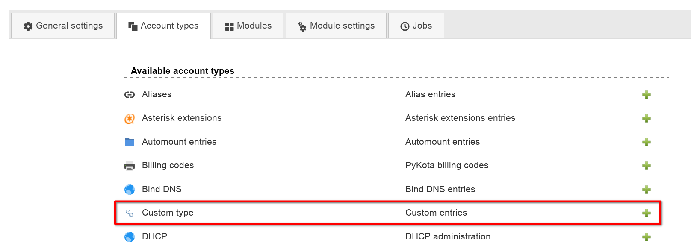
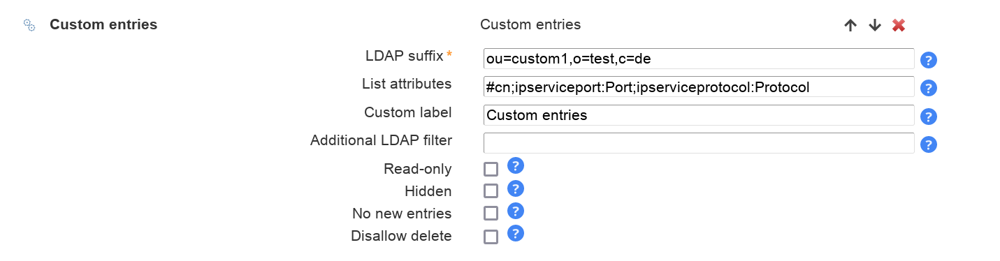
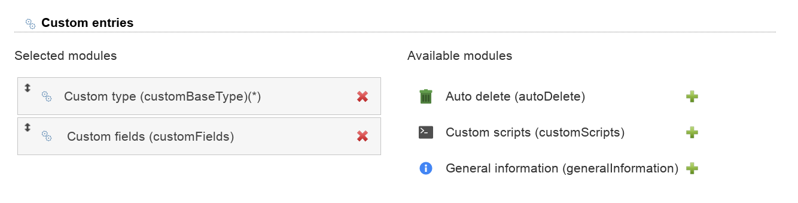
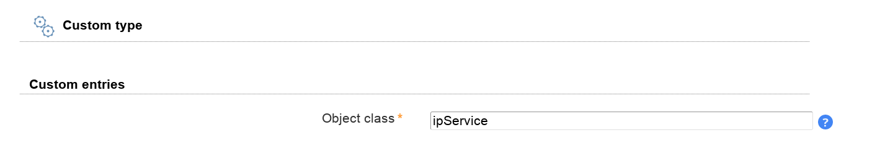
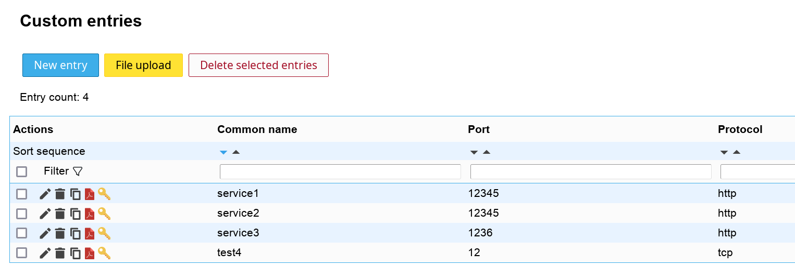

This account type allows you to manage any type of LDAP entries. This is e.g. needed if you define your own structural object classes or LAM does not yet provide a module for a structural object class.
Always use this together with Custom fields to specify the LDAP attributes.
Configuration
Add a custom account type in your server profile (you can also add multiple if needed).

Then specify the root DN where the entries should be stored. Also provide the attributes to show in list view and a unique label for your entries.

On tab modules add the custom type module. You will also need the Custom fields module to manage the attributes.

Finally, switch to tab Module settings. Here you need to specify the structural object class. Also configure the Custom fields module to manage all your attributes.

Manage your entries
You can now login to LAM and will see one tab for each configured custom type.
